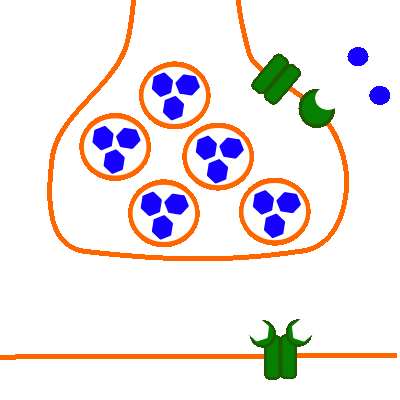

Erregungsübertragung (chemisch): Bau der Synapse
Neuro-Neuronale Synapse

Abb. 1: Bau der Neuro-Neuronalen Synapse
- Präsynaptisch (oben):
Präsynaptische Membran des Axons und des daran anschließend des Axonendknotens;
Vesikel-Membran;
Spannungsabhängiger Calciumioneniumkanal (Kanalprotein);
Opiod-Rezeptor (Regulatorisches Protein), beeinflusst die Öffnungsmöglichkeit des spannungsabhängigen Calciumionenkanals;
Serotonin, Dopamin oder (Nor-)Adrenalin als Neurotransmitter (sechseckig, hier in Vesikeln gespeichert);
Morphin oder Endorphine als Neuromodulator (rund)
- Postsynaptisch (unten):
Postsynaptische Membran der nachfolgenden Nervenzelle;
Transmitterabhängiger Natriumionenkanal (Kanalprotein) mit den Rezeptorstellen für den jeweiligen Neurotransmitter;
Externe Links
Synapse: Chemische Synapse